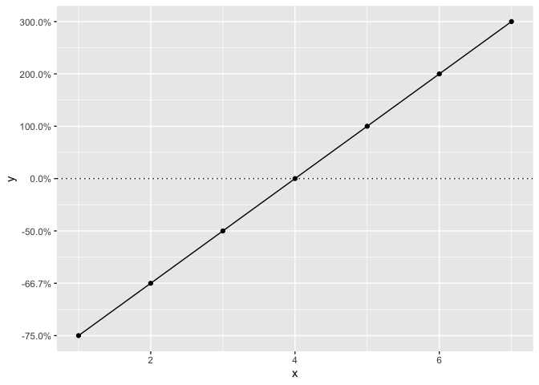
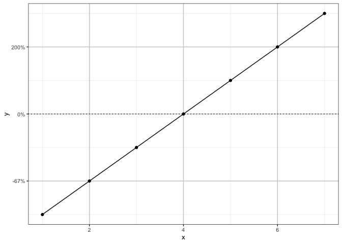

poisplot is an R package of a few utility functions to help with creating ggplot objects for Poisson’s projects.
Demonstration
People often find it easiest to conceptualize an effect size in terms of the percent change. However, negative percent change (which cannot be less than 100%) does not scale linearly in the same way as positive percent change (which is unlimited). This results in positive changes appearing much larger than equivalent negative changes in a standard plot.
library(poisplot)
library(ggplot2)
#> Warning: package 'ggplot2' was built under R version 3.6.3
library(scales)
data <- data.frame(y = c(-3/4,-2/3,-1/2,0,1,2,3))
data$x <- 1:nrow(data)
gp <- ggplot(data, aes(x = x, y = y)) +
geom_hline(yintercept = 0, linetype = "dotted") +
geom_line() +
geom_point()
gp + scale_y_continuous(labels = percent)The nfold_trans() function ensures that negative percent changes scale in the same way as positive percent changes.
gp + scale_y_continuous(labels = percent, trans = nfold_trans(), breaks = data$y)
The poisplot also makes the Poisson plot theme available.
gp + scale_y_nfold(labels = percent) +
theme_Poisson()
Installation
To install the latest development version from GitHub
if(!"devtools" %in% installed.packages()[,1])
install.packages("devtools")
devtools::install_github("poissonconsulting/poisplot")To install the latest development version from the Poisson drat repository
Code of Conduct
Please note that the poisplot project is released with a Contributor Code of Conduct. By contributing to this project, you agree to abide by its terms.